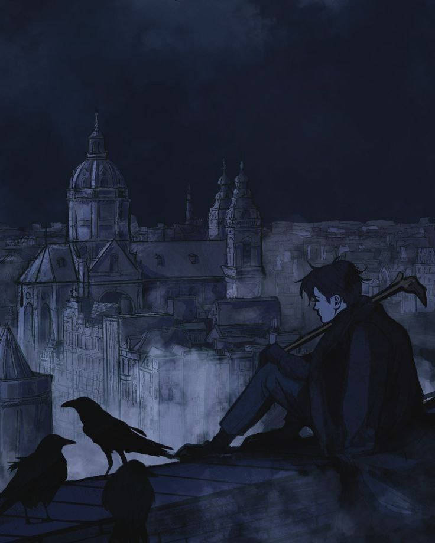
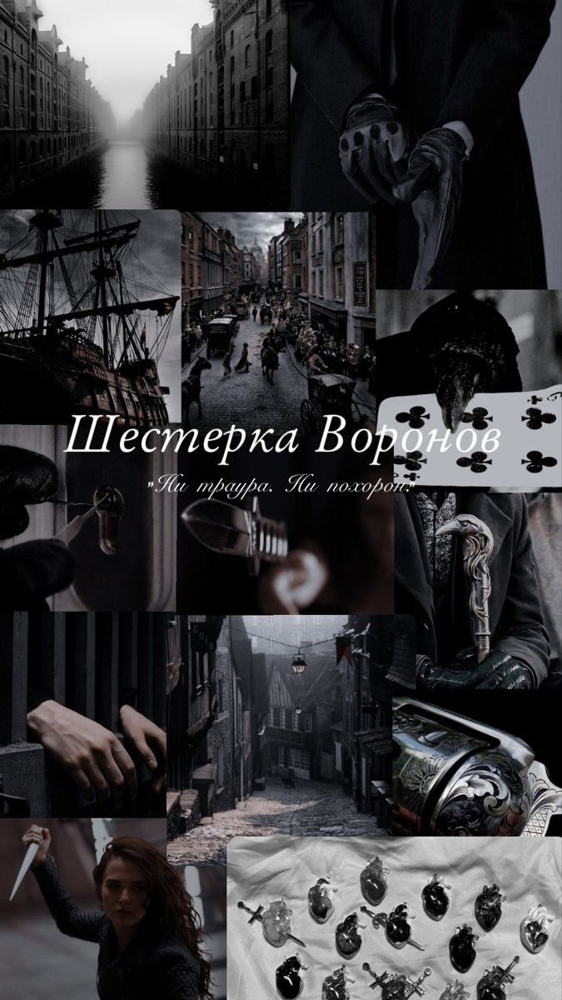
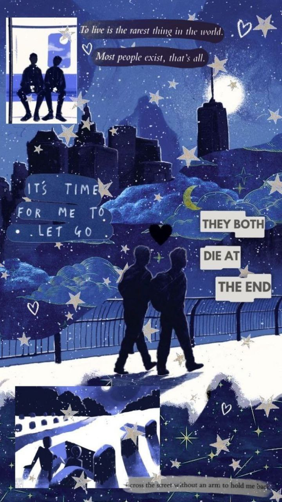
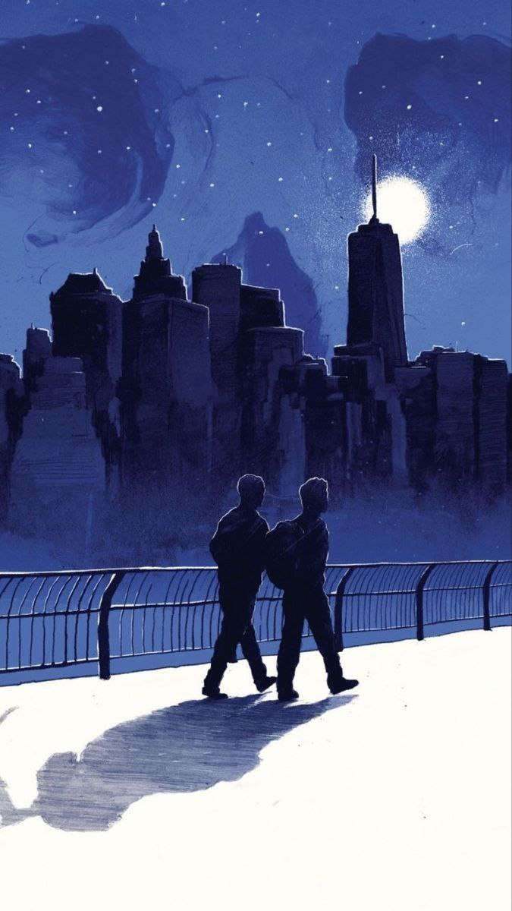

 - Нельзя выиграть, ведя лишь одну игру "Шестёрка воронов" Ли Бардуго
 - Секреты не монеты - при передачи они теряют ценность "Шестёрка воронов" Ли Бардуго
 - Жизнь - это круговая диаграмма, в которой максимальное счастье - это равные доли в каждой из сфер. "В конце они оба умрут" Адам Сильвера
 - Человек должен бояться не смерти, он должен бояться никогда не начать жить. "В конце они оба умрут" Адам Сильвера